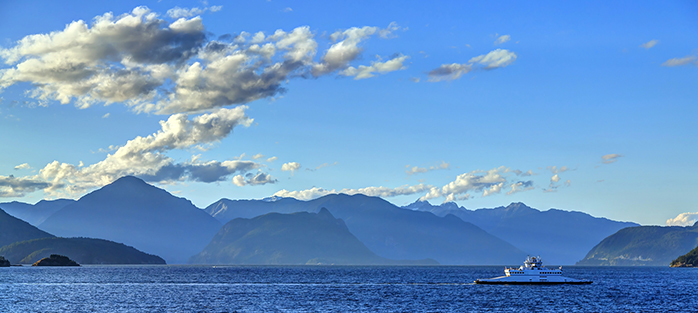

Walking Through the City
Take an adventure through the city of Vancouver. See all of the culturally diverse shops, museums, and resturants. Travel by train and boat to the Sunshine Coast!
Take an adventure through the city of Vancouver. See all of the culturally diverse shops, museums, and resturants. Travel by train and boat to the Sunshine Coast!
Here are some examples of the indigenous art represented throughout British Columbia
Take the train to Horseshoe Bay to catch the ferry
Board the ferry for your adventure to the Sunshine Coast
